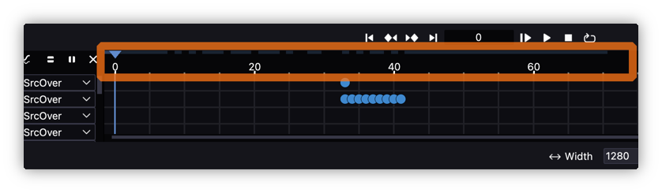
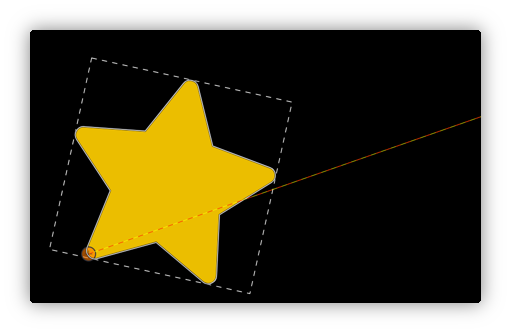
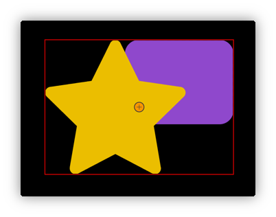
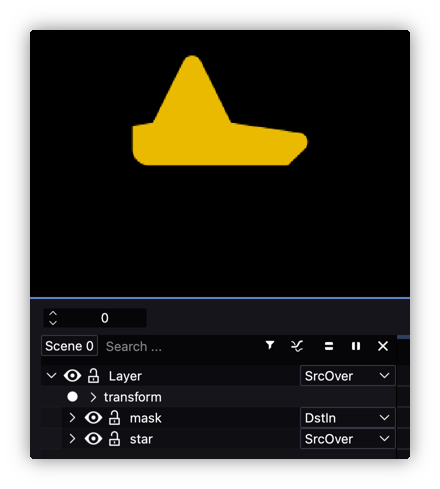
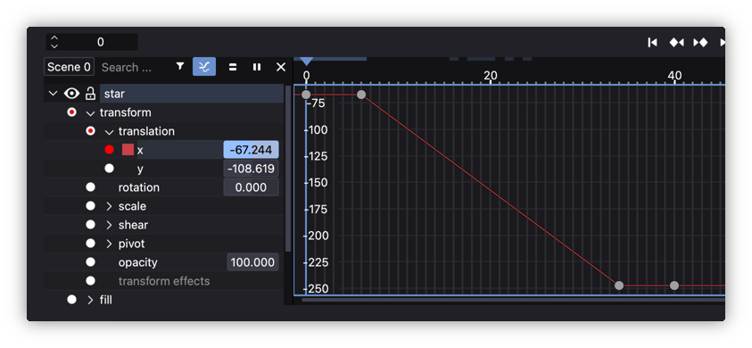

Tips
- Tips
- Timeline navigation
- Changing values
- Adding keyframes
- Canvas shortcuts
- Pivots
- Groups and layers
- Duplicating
- Layer blending modes
- Alpha Mask
- Visibility range
- Graph Editor
- Copy node information
- Dynamic path operations
- Dissolve nodes
- Nodes sequence
- Copy and paste paths
- SVG animations love Expressions
- Fast Scene Properties edit
- Easing reference chart
Timeline navigation

- The upper line allows you to change the current frame.
- The lower line allows you to change a range of visible frames of the timeline.
Use the mouse wheel while hovering over the bottom scroll bar to scale the timeline.
Changing values

It is possible to change the values by:
- clicking in the value box and dragging the cursor sideways (if holding
altkey modifier it will change values in smaller steps) - single clicking in the value box and using the keyboard to enter the values.
For both of them and when editing a value part of a double value (usually X and Y), it is possible to perform an uniform value input if pressing shift while editing or while hitting Enter to accept the changes, that is, the value will be applied to both fields.

Adding keyframes

To activate the recording of values, click on the record button next to the property name.
Keyframes are automatically added for properties with value registration enabled each time their value is changed.
Canvas shortcuts
For selected objects it is possible to use the following Keyboard shortcuts:
G: MoveR: RotateS: Scale

There is a way of limiting the translation or scale to just one axis by using the following shortcuts:
X: HorizontalY: Vertical

It is possible to use numerical values when transforming objects, just type the desired numbers:

To apply a transformation press ENTER or release the mouse.
To cancel press Esc or the right mouse button.
Pivots
Every object has a pivot that can be moved to transform the object from its axis, for instance if you rotate the object by pressing R shortcut:

Groups and layers
Groups combine or wrap objects into a new object, this new object has its own transform matrix, but opacity parameter does not work.

Layers are special group types. You should use them whenever you want the group to be rasterized before being drawn or when you need to apply an effect to the group. Now layers do take into account the opacity parameter.
For instance, a group can be promoted to layer and then apply Blur which is a Raster Effect:

So groups and layers may look like similar, they kind of are but they are definitely not.
Duplicating
Instead of “Copy” and “Paste”, it is better to use Duplicate and get an exact copy of your duplicated object (transform, colors, shapes,…):

Keyframes can be also duplicated when working in the Timeline, select a keyframe, place the time line at the desired frame and duplicate it:

– Shift + D duplicate and move frame
– Ctrl + D copy and paste in actual frame
Layer blending modes
(Not to be confused with Blend Effects explained here)

Objects, shapes and layers can blend with others (not groups, so don’t forget to promote a group into a layer if blending is desired). Each object can be drawn on its parent layer using different compositing modes. You can select the composition mode in the combo box next to the object name.
Remember that objects are drawn on their first source layer, which means that layer groups do not influence the way objects are drawn.
Alpha Mask
To create a simple alpha mask you need at least two objects, one of which will act as a mask.
You have to put both objects inside a layer so that the mask does not influence the objects outside the layer. That is, grouping them is not enough, you need to promote the group to layer:

For instance, if you want the rounded green rectangle to mask the star below:

You will need to set the rectangle layer (the rectangle shape itself) blend mode to DstIn and you will get the following mask:

In case you want the inverted mask use DstOut:

Visibility range
You can use the visibility range to control the visibility of an object.

Objects can just have 1 visibility range so if you want to have more ranges you will need to Split it by using the secondary button contextual menu, select Split and then a new object will be created.
Graph Editor
By default the interpolation between keyframes is set to linear when setting them with the parameter fields or within the canvas if editing transformations. Friction interpolation system is based on graphs, that means you could set up complex interpolations based on arcs and Bezier curves. In order to edit them the user must select a parameter and hit the Graph button to change from timeline Keyframes view to Graph view:

This is how it looks like:

By default new keyframes interpolations are linear. It is possible to select, move, set the keyframe node and their tangents (when the node is set to smooth) to the desired curve by using the following tools:

From left to right:
- easing: create complex segment transitions. It could take into account left (
in) and/or right (out) nodes of the segment. Check the available ones here. - make segment a line: make interpolation between nodes straight.
- make segment a curve: make interpolation between nodes curved, it will show up node tangents.
- symmetric nodes: it will make left and right node tangents of the same length.
- smooth nodes: it will turn node tangent length higher than 0, that is visible.
- corner nodes: it will turn node tangent length equal to 0, that is make it sharp.
- vertical fit view: it will fit all the keyframes (or nodes) in the view
- horizontal fit view: it will fit all the selected keyframes (or nodes) in the view. If none selected it will fit the whole scene.
Some tools may need the user to select two nodes to work as it will affect the “curve segment” and not just a node.
It is possible to preview more than one parameter at the time by pressing shift in the keyboard and clicking the desired parameter with the left mouse button.

Copy node information
Moving a node of an object while holding shift to another node of another object copies its exact location and the angle and length of both handles.

Check the following video for more information: Copy node information (NOTE: it’s an old video so it will refer to Enve 2D animation software instead of Friction which is an evolution of the first one)
Dynamic path operations
It is possible to create dynamic booleans operations with some paths inside an unique shape.

For instance, with a simple animation of the path in the middle:
Check the following video for more information: Dynamic path operations (NOTE: it’s an old video so it will refer to Enve 2D animation software instead of Friction which is an evolution of the first one)
Dissolve nodes
When animating the nodes of a shape, that is, if the path has the dot animation button turn on (red color):

It is possible to “remove” nodes from specific keyframes, the feature is called Dissolve nodes because they are not really removed but “disabled” or “dissolved” as they are not taken into account to create the shape but they are still there. The only thing it is possible to do is to move them along the segment where it belonged.

Then, it is possible to deactivate or dissolve in two ways:
- dissolve: it will deactivate the node and will create a new segment taking into account just the activated nodes.
- dissolve approximated: it will deactivate the node and will try to approximate the result of the segment to something similar it had with the activated node.
The other way round, nodes could at any keyframe be “activated” again, this is called promote to normal.

When creating/designing the assets, it is needed to take into account the maximum number of nodes needed for the morphing animation as later some of them should be promoted to dissolve state.
Check the following video for more information: Dissolve nodes (NOTE: it’s an old video so it will refer to Enve 2D animation software instead of Friction which is an evolution of the first one)
Nodes sequence
When in node editing (so calledPoint editing) mode, it is possible to check the node index applied to a shape. It could come handy when dissolving or morphing a shape into another one as at equal number of nodes each node will morph using its index.

In order to see the indexes just press ctrl + shift (cmd + shift in macOS) while in Point editing.
Copy and paste paths
Taking advantage of the previously explained Dissolve nodes feature, Friction allows to copy path and paste path from one path to another. It automatically will detect if the pasted one has the same or different number of nodes and it will animate the interpolation accordingly.

It is very convenient when the animator has the start shape and end shape saved in different paths and want to animate the morphing between them both but happening in the same object (shape).
The final result will be a kind of effortless morphing.
SVG animations love Expressions
Not all Friction features are compatible with SMIL (Synchronized Multimedia Integration Language) format or Friction developers had no time to create that feature but there is a neat workaround to be able to animate almost anything: use Expressions!.
For instance, Friction is not yet capable to export animations that contain Track Effect or keyframe easings but it you are able to create an expression that simulates the feature, at export time all expressions are automatically converted into keyframes so, voilà!, you end up with a final animated SVG that “includes” that feature:

In the previous example the Arrow “looks” at the crossed square using an Expression.
Fast Scene Properties edit
Designers often edit the scene properties while in the middle of an animation, the normal procedure is going to Menu -> Scene -> Scene properties... and edit them.
The most used ones, width, height, start frame and end frame, are exposed all time in the main window so there is no need to open any dialog:

Easing reference chart
Friction provides some precooked keyframes transitions for fast animation. They can be applied between 2 keyframes and in 3 modes in, out and in+out.
Check the following chart as reference: